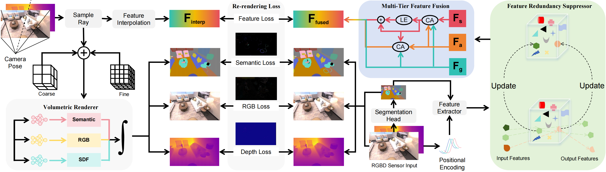
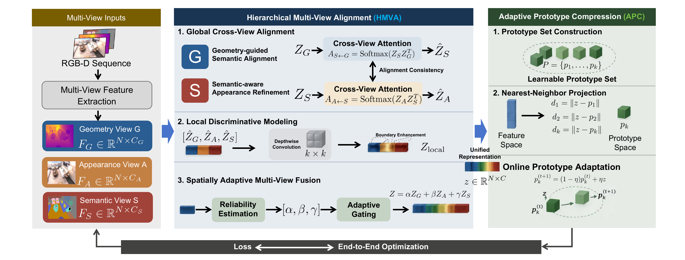

卢丹琪 Danqi Lu
深圳大学 · 人工智能学院 · 计算机科学与技术 Shenzhen University · School of Artificial Intelligence · Computer Science and Technology
邮箱： Email: 1021121049@qq.com
个人简介 Introduction
我目前为深圳大学人工智能学院2023级直博生，师从李坚强教授。聚焦具身智能中的机器人环境感知，围绕同步定位与建图开展研究，探索三维场景重建与语义理解的协同方法，提升机器人在复杂环境中的定位精度、建图质量与场景理解能力，为自主导航和智能交互提供支撑。以第一作者身份在NeurIPS、ICRA及Pattern Recognition等国际顶级会议与期刊上发表论文3篇，另有两项发明专利申请处于实质审查阶段。 I am a direct-entry Ph.D. student (2023 cohort) at the School of Artificial Intelligence, Shenzhen University, advised by Professor Jianqiang Li. My research focuses on robotic environmental perception in embodied intelligence, with an emphasis on simultaneous localization and mapping. I explore methods that jointly advance 3D scene reconstruction and semantic understanding to improve localization accuracy, mapping quality, and scene understanding in complex environments, supporting autonomous navigation and intelligent interaction. I have published three first-author papers in leading international conferences and journals, including NeurIPS, ICRA, and Pattern Recognition. Two invention patent applications are currently under substantive examination.
学习经历 Education
深圳大学
Shenzhen University
计算机科学与技术
Computer Science and Technology
博士
Ph.D.
广东工业大学
Guangdong University of Technology
计算机科学与技术
Computer Science and Technology
学士
B.Eng.
研究成果 Publications


专利 Patents
基于不确定性感知的路径规划方法及路径规划装置 Uncertainty-Aware Path Planning Method and Apparatus
基于特征冗余抑制的同步定位与建图方法及系统 Simultaneous Localization and Mapping Method and System Based on Feature Redundancy Suppression
获奖情况 Honors
- 博士研究生国家奖学金 National Scholarship for Doctoral Students
- 深圳大学拔尖创新人才奖学金特等奖 Grand Prize, Shenzhen University Top Innovative Talent Scholarship
- 深圳大学拔尖创新人才奖学金二等奖 Second Prize, Shenzhen University Top Innovative Talent Scholarship
- 广东工业大学2023届优秀毕业生 Outstanding Graduate of Guangdong University of Technology, Class of 2023
- 广东工业大学毕业论文创新奖 Undergraduate Thesis Innovation Award, Guangdong University of Technology
- 本科生国家奖学金 National Scholarship for Undergraduate Students
- 广东工业大学优秀学生一等奖学金 First Prize Outstanding Student Scholarship, Guangdong University of Technology
- 广东工业大学学习标兵奖学金 Academic Model Student Scholarship, Guangdong University of Technology
- 广东工业大学优秀学生二等奖学金 Second Prize Outstanding Student Scholarship, Guangdong University of Technology
- 广东工业大学优秀学生二等奖学金 Second Prize Outstanding Student Scholarship, Guangdong University of Technology
- 广东工业大学“优秀共青团员”荣誉称号 Outstanding Communist Youth League Member, Guangdong University of Technology
- 广东工业大学“军训积极分子”荣誉称号 Military Training Activist Honor, Guangdong University of Technology